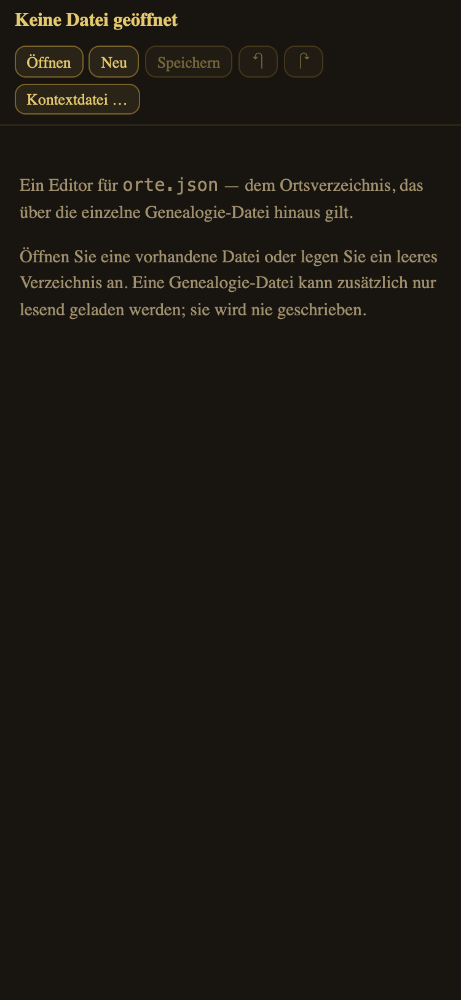
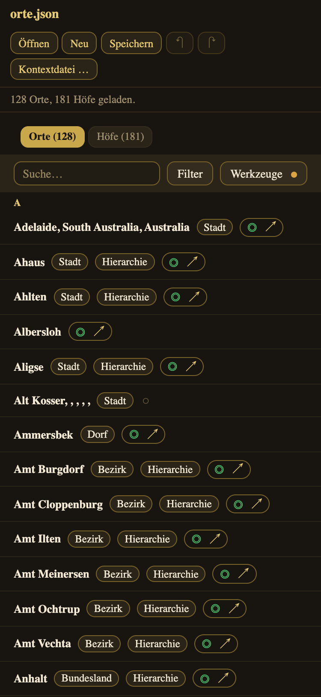
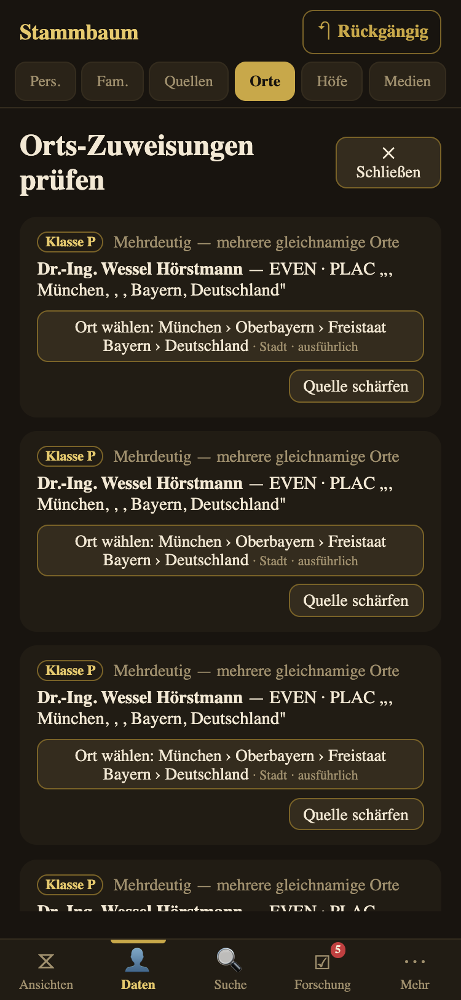
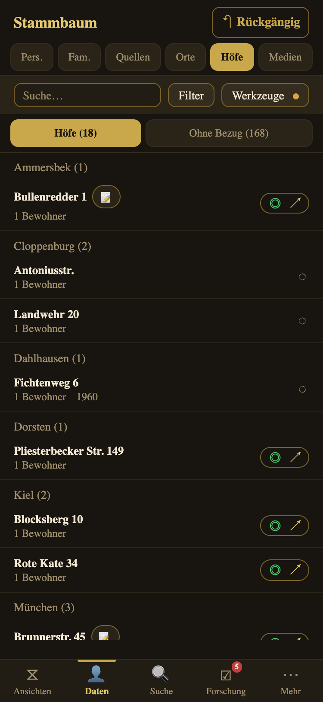

Ein Editor für orte.json, das Ortsverzeichnis über Stammbaum-Dateien hinweg
Version 9.18 · Stand 2026-08-19
1. Der Orte-Editor
Der Orte-Editor ist ein zweites, eigenständig aufrufbares Programm. Er
bearbeitet genau eine Sache: die Datei orte.json — das Ortsverzeichnis, das
über die einzelne Genealogie-Datei hinaus gilt (siehe Kapitel 8).
Sie erreichen ihn unter der Adresse des Hauptprogramms mit dem Zusatz
/orte/.
Warum getrennt? Orte zu pflegen ist eine eigene Tätigkeit mit eigenem Rhythmus. Sie
brauchen dafür weder einen geöffneten Stammbaum noch die übrige Programmoberfläche —
und der Ortsbestand gilt ohnehin für alle Ihre Dateien.

Ohne Datei: öffnen oder neu anlegen
Datei öffnen, bearbeiten, speichern
Der Editor arbeitet dateizentriert, wie ein Textprogramm: Sie öffnen
eine orte.json, ändern etwas, und speichern zurück. Es gibt keinen
Hintergrundspeicher, aus dem später etwas anderes auftaucht als das, was in der Datei
steht.
Öffnen wählt eine vorhandene Datei. Neu legt ein
leeres Verzeichnis an — Sie können also auch bei Null anfangen.
Speichern schreibt zurück. Am Rechner mit Chrome oder Edge landet
die Datei direkt wieder an ihrem Platz; auf iPhone, iPad und in anderen Browsern
bekommen Sie sie über das Teilen- bzw. Download-Blatt.
Ein Punkt neben dem Dateinamen zeigt ungespeicherte Änderungen.
Beim Schließen des Fensters warnt der Browser.
Rückgängig und Wiederholen arbeiten wie im
Hauptprogramm.
Absturz-Sicherung. Zwischen zwei Speichervorgängen merkt sich der Editor
einen Entwurf. Stürzt der Browser ab oder schließen Sie das Fenster versehentlich, bietet
er beim nächsten Start an, ihn wiederherzustellen. Sobald Sie speichern, verfällt er —
er ist eine Rettungsleine, keine zweite Fassung Ihrer Daten.
Stammt die Datei aus einer neueren Programmfassung, öffnet der Editor sie
nur zum Lesen. So kann eine ältere Fassung keine Angaben verwerfen, die sie nicht kennt.

Geöffnete Datei: alle Orte, Suche, Filter, WerkzeugeDer Steckbrief ist derselbe wie im Hauptprogramm
Am großen Bildschirm: Liste und Steckbrief nebeneinander
Ist das Fenster breit genug, steht die Orts- bzw. Höfeliste dauerhaft links neben dem
Steckbrief. Sie können damit einen Eintrag bearbeiten und im selben Blick sehen, welche
ähnlichen Einträge daneben stehen — genau die Arbeit, um die es beim Aufräumen von Orten
geht: Schreibvarianten erkennen, Dubletten vergleichen, Verwaltungsketten abgleichen.
Auf einem schmalen Fenster oder am Telefon tritt der Steckbrief an die Stelle der Liste;
„← Zurück" führt zurück (zur Liste oder dorthin, wo Sie hergekommen sind). Der Massen-Dedup nimmt in beiden Fällen die
ganze Fläche — er ist eine eigene Arbeitsfläche.
Kontextdatei: mit Stammbaum arbeiten, ohne ihn zu ändern
Manche Fragen lassen sich nur mit Ereignissen beantworten: Welche Orte braucht
eigentlich niemand mehr? Welche Dublette schadet wirklich? Wer lebte hier? Dafür
können Sie zusätzlich eine Genealogie-Datei laden — nur lesend.
Der Editor schreibt diese Datei nie und verändert dabei auch Ihr Ortsverzeichnis nicht:
Er legt aus unbekannten Ortsangaben keine neuen Orte an. Mit geladener Kontextdatei
erscheinen die Abschnitte „Ohne Bezug", die Zuordnungs-Prüfung, die Ortszeitgenossen und
die Bewohner eines Hofs — genau die Flächen, die ohne Ereignisse nichts aussagen könnten.
2. Orte
Orte sind in Stammbaum eigene Objekte — nicht nur Text in einem Ereignis. Das
erlaubt Verwaltungshierarchien, Namensvarianten über die Zeit, Koordinaten und
saubere Zusammenführung von Schreibvarianten. Das Orts- und Hofkonzept ist eines
der Herzstücke der App — es lohnt sich, es einmal zu verstehen.
Dieses Kapitel erklärt zuerst das Konzept (warum Orte und Höfe eigene
Objekte sind und was die Datei orte.json dabei leistet) und dann die
Bedienung (Liste, Steckbrief, Verknüpfen, Zusammenführen, Import/Export).
Das Konzept: zwei Objektarten, eine Wahrheit
In einer GEDCOM-Datei steht bei jedem Ereignis nur ein Ortstext wie
„Ochtrup, Kreis Steinfurt, Nordrhein-Westfalen, Deutschland". Für die reine Ablage
genügt das — aber Text kann nicht auf einer Karte liegen, weiß nichts von seiner
eigenen Geschichte und lässt sich nicht zuverlässig mit einer anderen Schreibweise
desselben Ortes zusammenführen. Stammbaum löst diesen Text deshalb gegen
zwei eigenständige Objektarten auf:
Der Ort (PlaceObject) — eine Verwaltungseinheit: ein
Dorf, eine Stadt, ein Kirchspiel, ein Kreis, ein Land. Er trägt datierte
Namensvarianten (Ochtdorp → Ochtrop → Ochtrup), eine datierte
Zugehörigkeitskette (welchem Amt, Kreis, Staat er wann unterstand),
Koordinaten, eine Notiz und eine Existenzspanne.
Der Hof (HofObject) — eine Adresse innerhalb eines
Dorfes (Straße, Hausnummer, Hofname). Ein Hof hängt immer an genau einem Dorf,
hat eigene Adressvarianten (Umbenennung, Hausnummernreform), eigene Koordinaten
(damit Binnenwanderung im Dorf sichtbar wird) und einen eigenen Lebenszyklus.
Beide sind bewusst getrennt: Ein Hof ist keine Verwaltungsebene,
und ein Land ist keine Adresse. Diese Trennung ist der Kern des ganzen Systems — sie
erlaubt es, dieselbe reale Identität über Jahrhunderte, Schreibweisen und
Grenzverschiebungen hinweg als ein Objekt zu führen.
Der Ortstext im Ereignis ist eine Projektion, kein Original. Sobald
ein Ereignis mit einem Ortsobjekt verknüpft ist, wird sein angezeigter und
exportierter Ortstext live aus dem Objekt berechnet — periodengerecht für das
Ereignisjahr. Ändern Sie am Ort etwas (einen historischen Namen, eine
Zugehörigkeit, die Koordinaten), wirkt das sofort auf jedes Ereignis, das
auf diesen Ort zeigt. Sie pflegen die Information an einer Stelle, nicht an
hunderten Ereigniszeilen.
Die Rolle der orte.json
Hier liegt der entscheidende Unterschied zu anderen Programmen. Ihr Wissen über Orte
und Höfe — Koordinaten, historische Namen, Verwaltungshierarchien — gehört nicht zu
einem Stammbaum, sondern zu der Landschaft, in der Ihre Familien
gelebt haben. Dass Ochtrup bei 52,20° N / 7,19° O liegt, 1803 vom Fürstbistum
Münster an Salm-Horstmar fiel und heute im Kreis Steinfurt liegt, ist in
jeder Ihrer Dateien dasselbe.
Deshalb bewahrt Stammbaum diesen Bestand in einer eigenen Datei
orte.json auf — getrennt von der Genealogie-Datei:
Stammbaum-übergreifend. Ein einmal gepflegter Ort steht
allen Ihren Dateien zur Verfügung. Sie recherchieren Ochtrups Geschichte
einmal, nicht in jeder Datei neu.
Nicht in der GEDCOM-/GRAMPS-Datei. Die Zeitachse (historische
Namen, datierte Zugehörigkeiten) kann GEDCOM gar nicht abbilden. Beim Export
wird sie auf den im Ereignisjahr gültigen Ortstext zusammengefaltet —
die volle Historie bleibt in orte.json, Ihre Datei bleibt
standardkonform und verliert nichts.
Die Datei ist die Wahrheit. Der Orte-Editor hält keine
Kopie im Gerät: Sie öffnen eine Datei, bearbeiten sie und speichern sie zurück — wie
in einem Textprogramm. Nur gegen einen Absturz merkt er sich einen Entwurf, der beim
Speichern verfällt.
Geräteübergreifend zusammengeführt. Pflegen Sie Orte auf
mehreren Geräten, führt die App die Bestände beim Abgleich verlustfrei zusammen
(Vereinigung, kein Überschreiben).
Was in die Genealogie-Datei gehört (die belegte Tatsache: „geboren in Ochtrup") und
was in den Ortsbestand gehört (das Weltwissen: „Ochtrup liegt hier und hieß früher
so"), ist damit sauber getrennt — und beides an seinem richtigen Platz.
Automatisch angelegt, von Hand veredelt
Sie müssen nicht bei null anfangen: Beim Öffnen einer Datei legt Stammbaum aus den
vorhandenen Ortstexten automatisch Ortsobjekte an (ein Dorf je
distinkter Schreibhierarchie) und löst die Ereignisse dagegen auf — das Orte-Register
ist also nie leer. Diese Erst-Anlage ist bewusst grob: Schreibvarianten desselben
Ortes ergeben zunächst getrennte Einträge. Das Veredeln — Dubletten zusammenführen,
Koordinaten und Historie ergänzen — geschieht danach mit den Kurationswerkzeugen
(siehe unten). Höfe entstehen dagegen nicht automatisch bei jedem Ereignis, sondern
nur dort, wo eine echte Adresse vorliegt.
Ein Ort, den Sie geprüft oder angereichert haben, trägt in Liste und Steckbrief die
Marke kuratiert. Sie ist keine Zierde, sondern eine Aussage darüber,
wer beim Speichern Recht behält: Bei einem kuratierten Ort folgen die
Ereignistexte Ihrer periodengerechten Ortskette aus dem Orts-Bestand — die Datei wird
also an Ihr Wissen angeglichen. Bei einem nicht kuratierten Ort bleibt stehen, was die
Quelldatei schreibt.
Kuratieren Sie die Orte, bei denen Sie sich sicher sind — und lassen Sie die übrigen
in Ruhe. So bestimmen Sie selbst, wo Ihre Recherche die Datei überschreibt und wo der
überlieferte Wortlaut unangetastet bleibt.
Ortsliste mit Anreicherungs-Status und Referenz-Filter
Die Umschalter Orte (N) / Ohne Bezug (N)
trennen genutzte von nicht referenzierten Orten.
Badges wie Hierarchie und ohne Zusatzangaben sowie ein
kleiner Ring zeigen den Anreicherungsgrad an.
Unter Filter → Anreicherung lässt er sich als Arbeitsvorrat
eingrenzen: ohne Zusatzangaben · wenig ergänzt ·
ausführlich. Die drei Stufen beschreiben den Datenstand, nicht Ihre
Arbeit — und „wenig ergänzt" ist die Stufe, an der sich Nachpflegen am meisten
lohnt.
Der Ort-Steckbrief
Die Abbildung zeigt den angereicherten Ort Ochtrup (Westf.) —
ein gutes Beispiel dafür, was ein Ortsobjekt alles trägt:
Verwaltungszugehörigkeit — aktuell als anklickbare Kette
(Ochtrup › Kreis Steinfurt › Nordrhein-Westfalen › Deutschland).
Zugehörigkeit nach Jahr — die volle Kette je Epoche:
1269 Amt Horstmar, 1803 Grafschaft Salm-Horstmar, 1811 französisches
Kaiserreich, 1815 Königreich Preußen … Genau diese Zeitachse kann eine
GEDCOM-Datei nicht speichern; sie lebt in orte.json.
Die Ansicht trennt dabei sauber, wessen Geschichte sie erzählt:
Jahreszeilen erscheinen nur, wo dieser Ort eine eigene datierte Zugehörigkeit
hat. Ist sie undatiert, steht genau eine Zeile „(undatiert)" mit der
Kette — und was die übergeordneten Ebenen an Wechseln erlebt haben, steht
darunter als eigener, so beschrifteter Block. Ein Dorf, über das nur bekannt
ist, dass es zum Kreis Steinfurt gehört, behauptet damit keine zehn eigenen
Zugehörigkeitswechsel.
Ereignisse nach Typ: welche Personen hier geboren wurden,
heirateten, starben — mit Quellen-Badges.
Ortszeitgenossen: wer zur selben Zeit am selben Ort lebte.
Ein Namens-Zeitstrahl hält historische Schreibvarianten fest — dazu
Übersetzungen in andere Sprachen (siehe unten).
Eine kleine Kartenvorschau zeigt die Lage, sobald Koordinaten
hinterlegt sind.
Über ✎ Bearbeiten sind alle Felder pflegbar — auch bestehende
Einträge: Ein Namens-Eintrag mit falsch getipptem Jahr und ein Zugehörigkeits-Zeitraum
lassen sich korrigieren, statt gelöscht und neu angelegt werden zu müssen. Zeiträume
dürfen dabei vorne offen sein („bis 1806") — die Zeit davor verschwindet nicht aus
der Geschichte, nur weil kein Anfangsjahr bekannt ist.
Jahr oder Stichtag — beides im selben Feld
Grenzen von Zugehörigkeiten und von Ortsnamen nehmen wahlweise ein Jahr
(1810) oder ein tagegenaues Datum (1 OCT 1810). Beides
steht im selben Feld; die App erkennt, was Sie getippt haben. Das ist kein
Detailluxus: Gebietsreformen und Umbenennungen haben oft ein bekanntes Datum
(Kotzenau wurde am 8. Mai 1945 zu Chocianów), und ein Ereignis vom Januar
desselben Jahres gehört dann noch zum alten Namen. Was die App nicht tut,
ist raten: Eine Eingabe, die weder als Jahr noch als Datum lesbar ist, wird
abgelehnt statt still auf ein Jahr gerundet.
Wenn zwei Zugehörigkeiten sich überschneiden, muss die App für ein
Ereignisjahr eine wählen — und sagt das, statt es zu verschweigen: ein
⚠ am Ende der betroffenen Kettenzeile weist darauf hin, dass hier
mehr als eine Angabe gilt. Die Auflösung ist eine Korrektur der Zeiträume, kein
Klick: Meist ist ein Anfangs- oder Endjahr zu eng oder zu weit gefasst.
Tag und Jahr bleiben von selbst deckungsgleich. Ein datierter
Eintrag trägt intern beides — das Jahr und, wo bekannt, den Stichtag. Wer die
orte.json einmal von Hand bearbeitet hat, kann die beiden auseinander
laufen lassen; dann zeigte die Zeitachse ein anderes Jahr an, als die Ortsauflösung
benutzt. Beim Laden zieht die App das Jahr deshalb an den Stichtag nach — aber nur,
wo wirklich ein tagegenaues Datum vorliegt. Ein ABT 1700 bleibt
unangetastet; eine Schätzung wird nicht in Scheingenauigkeit verwandelt.
„Ort löschen" steht nicht in der Knopfreihe neben
Speichern, sondern ganz unten in der abgesetzten Zone — dieselbe Stelle
wie bei Person, Familie und Quelle. Es setzt die betroffenen Ereignisse behutsam
auf ihren reinen Textstand zurück; die Ereignisse selbst gehen nie verloren.
Was „Verwerfen" verwirft
Im Bearbeiten-Modus gibt es zwei Arten von Änderung, und der Steckbrief
macht die Grenze sichtbar, statt sie zu verwischen: Der Block
Grunddaten (Name, Anzeigename, Typ, Koordinaten, GOV-Angaben)
sammelt Ihre Eingaben und schreibt sie erst bei Speichern;
Verwerfen stellt genau diese Felder wieder her — und lässt den
Bearbeiten-Modus offen. Alles andere — Namensvarianten, Zugehörigkeits-Zeiträume,
bei Höfen Adressen und Dorfwechsel — wirkt sofort,
weil daran Folgeänderungen hängen (eine Hof-Umbenennung zieht durch alle
referenzierenden Ereignisse). Ein „Abbrechen", das diese Wirkung zurückzunehmen
verspräche, wäre eine Unwahrheit. Wollen Sie so etwas zurücknehmen, ist
↶ Rückgängig das richtige Werkzeug.
„Geprüft markieren"
Im Kopf des Steckbriefs — neben ✎ Bearbeiten, nicht darin — sitzt
ein Schalter, der eine Frage beantwortet, die die Daten selbst nicht beantworten
können: Hat hier schon einmal ein Mensch hingesehen? Ein Ort, an dem nichts zu ergänzen war, sieht sonst genauso
unbearbeitet aus wie einer, den nie jemand angefasst hat. Ein Tipp macht daraus
„✓ Geprüft" samt Datum; ein weiterer nimmt die Markierung
zurück. Das Datum steht auf dem Knopf und nicht nur im Tooltip — auf einem
Touchgerät gäbe es einen Tooltip gar nicht. Sie wird nie automatisch gesetzt — Bearbeiten allein genügt nicht
— und bedeutet „angesehen und für richtig befunden", nicht „vollständig".
Denselben Schalter tragen die Höfe.
Ort-Steckbrief „Ochtrup": die volle Verwaltungszugehörigkeit,
Epoche für Epoche
GOV-Eintrag übernehmen
Das Geschichtliche Ortsverzeichnis (GOV) hält für
viele deutsche Orte genau das, was eine GEDCOM-Datei nicht speichern kann: die
Verwaltungszugehörigkeit Epoche für Epoche. Im Bearbeiten-Modus eines
Ortes nimmt die Sektion „GOV-Eintrag übernehmen" die Textzusammenfassung
einer GOV-Seite entgegen — kopieren, einfügen, übernehmen. Die App liest daraus
Ortstyp, fremdsprachige Namen und die datierte Zugehörigkeitskette heraus.
Bewusst ohne Netzabruf: der Einfüge-Weg funktioniert auch offline
im Archiv.
Fill-if-empty — Übernommenes füllt nur Lücken und überschreibt
nichts, was Sie selbst recherchiert haben.
Unbekannte Elternorte der Kette legt die App als Platzhalter an; der Schritt ist
ein normaler Vorgang und mit ↶ Rückgängig zurücknehmbar.
Koordinaten, Kartenvorschau und Geocoding
Koordinaten sind die Grundlage jeder Karten-Darstellung. Liegen sie
vor, zeigt der Steckbrief eine statische Kartenvorschau der Lage — sie
kommt ohne Kartendienst aus und funktioniert damit auch offline.
Koordinaten tragen Sie beim ✎ Bearbeiten von Hand ein — oder Sie lassen
sie bestimmen: 📍 Via Nominatim geocodieren schlägt anhand des
Ortsnamens Koordinaten (und, wenn noch keiner gesetzt ist, den Ortstyp) vor. Für den
ganzen Bestand auf einmal gibt es in der Ortsliste unter Werkzeuge die
Aktion „📍 Alle ohne Koordinaten geocodieren" — ein ratenbegrenzter
Stapellauf mit Fortschrittsanzeige.
Geocoding nutzt den offenen Dienst Nominatim/OpenStreetMap und ist
damit eine der wenigen Funktionen, die das Internet brauchen — ohne Netz arbeitet die
App unverändert weiter, nur dieser Abruf entfällt. Ihre Kuration bleibt geschützt: ein
Vorschlag überschreibt nie einen bereits gepflegten Ortstyp.
Ortsnamen in anderen Sprachen
Neben den historischen Schreibvarianten (dieselbe Sprache, andere Schreibung)
hält ein Ort seine Übersetzungen fest: derselbe Ort in einer anderen
Sprache, jeweils mit vorangestelltem Sprachkürzel — etwa der lateinische Name in einem
Kirchenbuch oder der polnische Name eines ostdeutschen Dorfes. So bleibt für
ausgewanderte Linien und mehrsprachige Regionen nachvollziehbar, unter welchem Namen ein
Ort in welcher Quelle erscheint.
Verknüpfen, prüfen, zusammenführen
Text → Ort verknüpfen: Ein reiner Orts-String im Ereignis wird
einem Ortsobjekt zugeordnet — die Anzeige aktualisiert sich sofort.
Orts-Review arbeitet unklare Zuordnungen ab. Stehen mehrere
gleichnamige Orte zur Wahl, zeigt jede Kandidatenzeile, was die Entscheidung
tatsächlich trägt: die volle Kette, die Verwaltungsebene
(Stadt ⇄ Kreis — bei zwei „Münster" genau der Unterschied), den
Anreicherungsgrad und ein ✓ geprüft, wo schon jemand
hingesehen hat. Passt keiner der Kandidaten, führt „Quelle schärfen"
zurück ans Ereignis, um Ortstext oder Adresse zu präzisieren.

Orts-Review, Klasse P: jede Kandidatenzeile nennt Verwaltungsebene
und Anreicherungsgrad
Massen-Zusammenführung bündelt Konfliktgruppen (mehrere
Schreibweisen desselben Ortes) und kennzeichnet die Herkunft. Die Ereignisse der
aufgelösten Orte hängen sich dabei auf den Sieger um — nach einem Merge zeigt kein
Ereignis mehr auf einen „nicht gefundenen Ort", und keines fällt in die Review-Liste
zurück, das vorher eindeutig zugeordnet war.
Eine Korrektur wirkt bis ins Ereignis
Der wichtigste stille Dienst der Ortsverwaltung: Wenn Sie an einem Ort etwas
korrigieren, das seine Identität ausmacht — den Namen, die
Verwaltungszugehörigkeit, die Zuordnung zu einem übergeordneten Ort —, dann ziehen die
betroffenen Ereignisse mit. Und zwar nicht nur die dieses einen Ortes, sondern die
seines ganzen Teilbaums: Wer „Amt Meinersen" in „Vogtei Meinersen"
ändert, ändert damit die Ortsangabe jedes Ereignisses in jedem Dorf darunter.
Das klingt nach einer Kleinigkeit, entscheidet aber darüber, ob Ihre Arbeit den
nächsten Programmstart überlebt: Der Ortstext im Ereignis ist die Brücke zwischen Ihrer
Datei und Ihrem gepflegten Ortsbestand. Bliebe er auf dem alten Stand stehen, würde die
App beim nächsten Laden einen zweiten, gleichnamigen Ort anlegen — die Korrektur hätte
genau die Dublette erzeugt, die sie beseitigen sollte.
Anzeige und Datei sind zweierlei. Was Sie in einer Ereigniszeile
lesen, wird immer periodengerecht aus dem Ortsobjekt berechnet: für ein
Ereignis von 1750 die Kette von 1750. Was in Ihrer Datei steht, bleibt
derweil Ihr Wortlaut — ein bloßes Öffnen und Speichern schreibt daran nichts um. Erst
eine bewusste Kuration (verknüpfen, zusammenführen, GOV übernehmen, umbenennen)
aktualisiert den Text in der Datei, und dann ist sie über ↶ Rückgängig
zurücknehmbar.
So halten Sie Ihre Orte sauber
Anreichern: einen vorhandenen Orts-Bestand
(Koordinaten, Hierarchien) importieren.
Zusammenführen: im Werkzeuge-Bereich die Massen-Dedup laufen
lassen und Schreibvarianten desselben Ortes bündeln.
Verknüpfen: übrige Text-Orte einem Ortsobjekt zuordnen — die
Anzeige aktualisiert sich sofort.
Prüfen: die Orts-Review-Liste abarbeiten und den Filter
„Ohne Bezug" nutzen, um verwaiste Orte aufzuräumen.
Abhaken: jeden angesehenen Ort mit „Geprüft
markieren" abhaken — auch den, an dem nichts zu tun war. Erst dadurch wird aus
„unbearbeitet" die Auskunft „schon angesehen", und der nächste Durchgang kann
dort ansetzen, wo wirklich noch niemand war.
Ordnen Sie die Orte früh — am besten direkt nach dem Import. Viele spätere Funktionen
(Karte, Statistik, Ortszeitgenossen, Migrationswege) hängen daran, dass Ereignisse an
echten Ortsobjekten hängen und nicht an losem Text.
3. Höfe

Höfe nach Dorf, Straße und HausnummerHof-Detail: Adressvarianten und Bewohner
Ein Hof ist eine feinere Ortsebene — eine Adresse innerhalb
eines Dorfes. Die Höfe-Liste gruppiert nach Dorf und zeigt darunter Straße und
Hausnummer.
Alle Hof-Felder sind editierbar; eine Umbenennung wirkt durchgängig
— auf allen referenzierenden Ereigniszeilen.
Auch das Dorf eines Hofes lässt sich ändern: über denselben
Ortspicker wie am Ereignis. Nützlich nach einer Eingemeindung oder wenn ein
Hof beim Import unter dem falschen Dorf gelandet ist — die Bewohner und ihre
Ereignisse ziehen mit.
Hof-Review und Massen-Zusammenführung
bereinigen den Bestand analog zu den Orten.
Wie der Ort trägt auch der Hof Koordinaten und eine
Kartenvorschau im Detail — ein Hof kann so präziser verortet
sein als sein Dorf (etwa ein einzelnes Gehöft).
„Hof löschen" entfernt die Hof-Ebene, ohne die Ereignisse zu verlieren — zu
finden ganz unten am Steckbrief, in der abgesetzten Lösch-Zone, nicht neben
Speichern.
Warum Höfe eine eigene Ebene sind
In ländlichen Regionen ist der Hof die eigentliche Konstante der
Familiengeschichte — nicht die Person und nicht das Dorf. Höfe überdauern Generationen,
ihr Name geht auf den ein, der einheiratet, und Kirchenbücher notieren jahrhundertelang
„Anna, Tochter des Colon Brüning zu Langenhorst" statt einer Adresse. Wer nur das Dorf
erfasst, wirft genau die Ebene weg, auf der sich diese Quellen unterscheiden lassen.
Deshalb ist ein Hof in Stammbaum eine eigene Entität und kein Textfeld:
Er trägt Adressvarianten (jede Schreibweise, die in Quellen auftaucht), eigene
Koordinaten, seine Bewohner und Eigentümer über die Zeit — und lässt sich zusammenführen,
wenn zwei Schreibweisen sich als derselbe Hof herausstellen.
Der Ort beantwortet „wo auf der Karte", der Hof „welches Haus". Beides zusammen macht
aus einer Ansammlung gleichnamiger Personen eine nachvollziehbare Ortsgeschichte — die
Grundlage für Hofchronik und Ortssippenbuch (Kapitel „Ausgaben").
4. Grenzen und Zusammenspiel
Was der Editor nicht kann — und warum
Die Orts- und Hof-Oberfläche ist in beiden Programmen dieselbe. Was fehlt, fehlt nicht aus
Sparsamkeit, sondern weil die Grundlage dafür im Editor nicht existiert:
Ohne Kontextdatei entfallen „Ohne Bezug", die Zuordnungs-Prüfung,
Ortszeitgenossen und Hof-Bewohner. Eine leere Liste würde behaupten, es gäbe nichts —
tatsächlich fehlt die Quelle der Auskunft.
„Quelle schärfen" gibt es nicht: Dieser Schritt ändert ein Ereignis
in der Genealogie-Datei, und die schreibt der Editor nicht.
Karte und Zeitleiste fehlen als eigene Ansichten. Die Kartenvorschau
im Steckbrief bleibt.
Alles Übrige ist vollständig da: Liste, Steckbrief, Bearbeiten, Namensvarianten,
Übersetzungen, Verwaltungszugehörigkeit, GOV-Übernahme, Koordinaten und Geocoding,
Dubletten-Suche und Zusammenführen — bei Orten wie bei Höfen.
Zusammenspiel mit dem Hauptprogramm
Beide Programme sprechen dieselbe Datei. Speichert der Editor, zählt er die Revision hoch
und trägt seine eigene Gerätekennung ein — das Hauptprogramm erkennt die Datei beim
Import deshalb als Stand eines anderen Geräts und führt sie verlustfrei mit seinem
Bestand zusammen, genau wie bei zwei Geräten.
Ein üblicher Ablauf: im Editor in Ruhe aufräumen und speichern, danach im Hauptprogramm
über Datei → Orte importieren übernehmen.